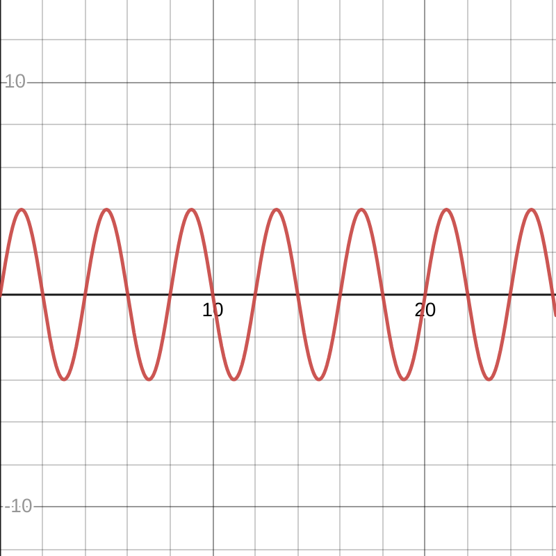
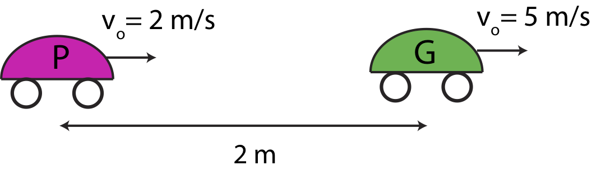

The homework is due on Thursday, December 4th.
You should Work on it in the newly organized groups and consult me if you have any questions. As I have reiterated multiple times, cheating between groups will have a serious consequence.
For purposes of neatness and simplicity of grading, you should do the homework on an A-4 paper. However, use your exercise book as a scrapbook.
All answers should be written using a pen. Do not use a pencil. If you make an error, strike a line through it and correct it on the next line.
If you are attempting the Advanced Problems, your submission should be via email. The Advanced Problems have the same deadline as the rest of the problems.
Answer the following questions based on the position versus time graph given below of an object moving.

Describe the position as a function of time.
Find expressions for v(t) and a(t).
Plot the graphs of v(t) and a(t).
What is the jerk
The acceleration of a particle moving along the x-axis is given by the equation:
$$a \left( t \right) = \left(0.500\frac{m}{s^3}\right)t + \left(2.70 \frac{m}{s^2}\right)$$
If the particle is at position x = + 5.12m and is moving in the − x direction at a speed of 12.8m/s at time t = 0s,
Find the time at which the particle momentarily comes to rest.
Find the position where the particle (briefly) comes to rest.
A ball is thrown vertically upward at the same instant that a second ball is dropped from rest directly above it. The two balls are 15.0m apart when they start their motion. Find the maximum speed at which the first ball can be thrown such that it doesn’t collide with the second ball before it returns to its starting height. The starting conditions of two cars at t = 0 are shown in the figure below. The green car, G, starts out 2 m ahead of the pink car, P. At t = 0 the pink car is moving to the right at 2 m/s, while the green car is moving to the right at 5 m/s. The pink car is accelerating to the right with magnitude of 6 m/s2, while the green car is accelerating to the left with with magnitude of 4 m/s2. Assume acceleration is constant for both cars. Define the origin at the location of the pink car at t = 0.

Calculate the time when the pink car catches up to the green one.
At which positions do the two cars meet?
A car is driving through a green light at t = 0 located at x = 0 with an initial speed vi, c = 16m/s. At time t1 = 1s, the car starts braking until it comes to rest at time t2. The acceleration of the car as a function of time is given by the piece-wise function
$$a_{c}(t)=\left\{\begin{array}{l}
0 ; \quad 0<t<t_{1}=1 \mathrm{s} \\
b\left(t-t_{1}\right) ; 1 \mathrm{s}<t<t_{2}
\end{array}\right. \nonumber$$
where b = − (8m/s3).
Assuming the car travels only in the x-direction, find the velocity and the position of the car as a function of time.
A bicycle rider is riding at a constant speed of Vi, b and at t = 0 is 32 m behind the car. The bicyclist reaches the car when the car just comes to rest. What is the speed of the bicycle?
At the instant a traffic light turns green, a car starts from rest with a given constant acceleration, 3.0m/s2. Just as the light turns green, a bus, traveling with a given constant velocity, 18m/s, passes the car. The car speeds up and passes the bus sometime later. How far down the road has the car traveled, when the car passes the bus? A car, starting at rest at t = 0, accelerates in a straight line for 140 m with an unknown constant acceleration. It reaches a speed of 12 m/s and then continues at this speed for another 20 s.
Write down the equations for the position and velocity of the car as a function of time.
How long was the car accelerating?
What was the magnitude of the acceleration?
Plot speed vs. time, acceleration vs. time, and position vs. time for the entire motion.
What was the average velocity for the entire trip?
Write a simple python program using the normal python or vpython that models a freely falling object with a specified input initial height & velocity from a user.
(5 points) Your program should properly take input.
(5 points) Your program should plot the v(t) & x(t) graphs.
(2 points) You can make your program prepare an animation/GIF of the trajectory for additional extra credit.
(3 points) You can upload your program online to Github for extra credit.